Prerequisites
This article assumes the following:
- You have some experience in development, so a question like “let’s install Python and some additional packages” doesn’t leave you perplexed.
- You want to get a feel for how a cliché like “neural network” actually works.
- You have some preliminary knowledge of how it works: that it’s about having a labeled dataset of what we’re going to classify (in this case, dogs and cats), that it’s about a training process (it’s enough to know that it takes some time), and that it’s about testing what you get.
- You have at least a 3–4 year old laptop. All the experiments described below were done on a MacBook Pro M3 Pro with 18 GB RAM — this is just so you know what configuration to expect.
- This article doesn’t claim to be anything extraordinary or new. It simply reflects the work of a software engineer who, before taking an academic course on Machine Learning, decided to compile a few different texts from the Internet into a manual and get a result that could be called a “Hello World” of neural networks.
- Python is used here.
Result of your work
So once you’ve run this script on your local environment, you’ll be able to classify photos — telling whether a given image shows a cat or a dog. You can download any image from the Internet, crop it to the expected size, and classify it by calling a fairly simple Python script.
Let’s begin.
Dataset
You probably either know, or have an intuitive feeling for, how Machine Learning works. Because we’re talking about image classification specifically, we need something for our software to learn from. By “learn” I technically mean: a set of images will be read by the script, processed in some pretty smart way, and certain combinations of pixels, extracted from that sequence of images, will end up associated with either “cat” or “dog.” This is only possible because someone already did the hard work: they opened up the images and labeled each one, saying “this is a cat” or “this is a dog.” That someone was presumably a human being (not entirely sure, to be honest), but that labeling job is enormously important — our neural network has to learn, from somewhere, that a certain combination of pixels is a furry cat or a grumpy dog. At least until we can inject that knowledge directly into the neural network’s “brain” (joke).
So we’re going to download the dataset from here: Cats and Dogs. It’s hosted by Microsoft, and the zip archive is about 800 MB.
Once the archive is downloaded, it’s worth taking a look at what you got before using it. You’ll most likely see something like this: two directories of already-classified images, where the directory an image is placed in tells you what’s depicted in it.
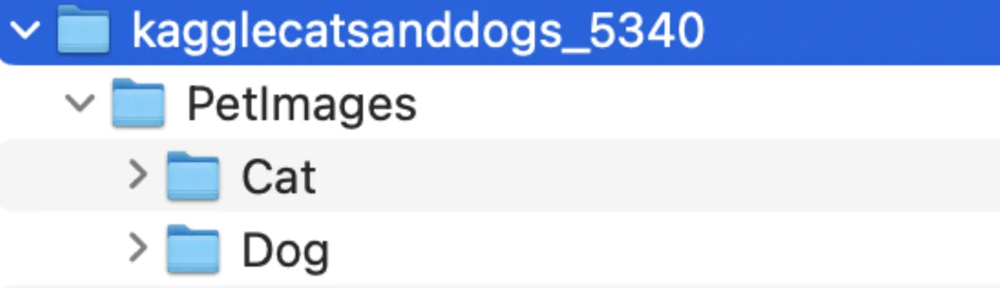
Sure enough, if you check what each directory contains, you’ll find a list of jpg files. At the time of writing, the archive contains 12,500 images each of cats and dogs.
The snag is that at least one of these files is apparently broken — we’ll account for that when we write the classification script.
Train and validation datasets
The reason we need to split our dataset into two parts should be intuitive enough. The core idea of learning is to train (meaning: calculate some coefficients, which we call weights, as the result of a long sequence of calculations) and then validate what we obtained. Since we have a fairly large dataset — approximately 25,000 images (12,500 cats + 12,500 dogs) — we can split it into two parts using an 80/20 proportion: 80% of the files will be copied into one folder, named “train,” and the remaining 20% into another folder, named “validation.”
On my computer, the directory structure looks like this — but the script accounts for the possibility that these directories don’t exist yet, so it creates them for you.
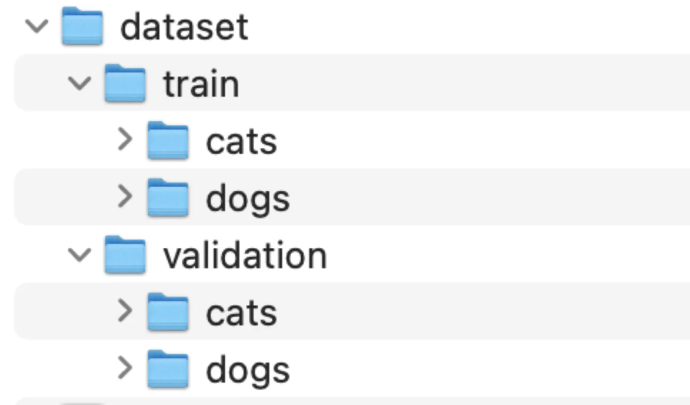
How are we going to do this? The answer is pretty straightforward: we’ll write Python code that reads the list of files from the downloaded directory, splits them in the 80/20 proportion, and copies them into the corresponding folders — which the script creates for you if they don’t already exist. I’ll show the snippet below, and if you still want the explanation afterward, just keep reading.
Keep in mind that because one or more files are corrupted (Python threw exceptions on my machine about certain files not being readable), I use an extra function to verify that an image won’t cause problems before it’s used.
from PIL import Image
import os
import shutil
import random
# Function to check if a file is a valid image
def is_image_file(filename):
try:
with Image.open(filename) as img:
img.verify()
return True
except (IOError, SyntaxError):
return False
# Paths
original_dataset_dir = "kagglecatsanddogs_5340/PetImages"
base_dir = "dataset"
# Create directories
train_dir = os.path.join(base_dir, "train")
validation_dir = os.path.join(base_dir, "validation")
# Clear out any previous split before recreating it, so re-running this
# script doesn't accumulate files on top of an older split or leak the
# same image into both train and validation across different runs.
shutil.rmtree(train_dir, ignore_errors=True)
shutil.rmtree(validation_dir, ignore_errors=True)
os.makedirs(train_dir, exist_ok=True)
os.makedirs(validation_dir, exist_ok=True)
train_cats_dir = os.path.join(train_dir, "cats")
train_dogs_dir = os.path.join(train_dir, "dogs")
validation_cats_dir = os.path.join(validation_dir, "cats")
validation_dogs_dir = os.path.join(validation_dir, "dogs")
os.makedirs(train_cats_dir, exist_ok=True)
os.makedirs(train_dogs_dir, exist_ok=True)
os.makedirs(validation_cats_dir, exist_ok=True)
os.makedirs(validation_dogs_dir, exist_ok=True)
# List of filenames
cat_dir = os.path.join(original_dataset_dir, "Cat")
dog_dir = os.path.join(original_dataset_dir, "Dog")
cat_filenames = [
f
for f in os.listdir(cat_dir)
if f.endswith(".jpg") and is_image_file(os.path.join(cat_dir, f))
]
dog_filenames = [
f
for f in os.listdir(dog_dir)
if f.endswith(".jpg") and is_image_file(os.path.join(dog_dir, f))
]
# Shuffle the data
random.shuffle(cat_filenames)
random.shuffle(dog_filenames)
# Define split sizes
train_size = int(0.8 * len(cat_filenames)) # 80% for training
validation_size = len(cat_filenames) - train_size # 20% for validation
# Copy files to train and validation directories
for i in range(train_size):
shutil.copyfile(
os.path.join(cat_dir, cat_filenames[i]),
os.path.join(train_cats_dir, cat_filenames[i]),
)
shutil.copyfile(
os.path.join(dog_dir, dog_filenames[i]),
os.path.join(train_dogs_dir, dog_filenames[i]),
)
for i in range(train_size, len(cat_filenames)):
shutil.copyfile(
os.path.join(cat_dir, cat_filenames[i]),
os.path.join(validation_cats_dir, cat_filenames[i]),
)
shutil.copyfile(
os.path.join(dog_dir, dog_filenames[i]),
os.path.join(validation_dogs_dir, dog_filenames[i]),
)Explanation of the file-splitting code
Let’s walk through this code in case it needs explaining. If you’re only interested in image classification, feel free to skip this part — it’s purely file operations. All you need to know is that the result is two folders, train and validation, with the source images distributed between them in an 80/20 proportion. To make this work, you just need to set two variables, which are fairly self-explanatory.
original_dataset_dir = "kagglecatsanddogs_5340/PetImages"
base_dir = "dataset"The first function simply verifies that an image is valid. As I mentioned above, some images are broken, and I want to filter the corrupted ones out.
# Function to check if a file is a valid image
def is_image_file(filename):
try:
with Image.open(filename) as img:
img.verify()
return True
except (IOError, SyntaxError):
return FalseThe next block of code creates the two folders with hardcoded names, train and validation. Before that, it deletes any old train and validation folders that already exist — otherwise, re-running the script would copy files on top of an older split, and because the shuffle below has no fixed seed, the same image could end up in train on one run and validation on another, quietly leaking data between the two sets.
# Create directories
train_dir = os.path.join(base_dir, "train")
validation_dir = os.path.join(base_dir, "validation")
# Clear out any previous split before recreating it
shutil.rmtree(train_dir, ignore_errors=True)
shutil.rmtree(validation_dir, ignore_errors=True)
os.makedirs(train_dir, exist_ok=True)
os.makedirs(validation_dir, exist_ok=True)The next bit of code is pretty similar: inside each of the directories we just created, it creates a corresponding pair of subfolders, cats and dogs.
train_cats_dir = os.path.join(train_dir, "cats")
train_dogs_dir = os.path.join(train_dir, "dogs")
validation_cats_dir = os.path.join(validation_dir, "cats")
validation_dogs_dir = os.path.join(validation_dir, "dogs")
os.makedirs(train_cats_dir, exist_ok=True)
os.makedirs(train_dogs_dir, exist_ok=True)
os.makedirs(validation_cats_dir, exist_ok=True)
os.makedirs(validation_dogs_dir, exist_ok=True)And more file operations. Let’s grab the list of files from the downloaded and unarchived folder (you’ll have to unarchive it yourself, sorry about that).
cat_filenames = [
f
for f in os.listdir(cat_dir)
if f.endswith(".jpg") and is_image_file(os.path.join(cat_dir, f))
]
dog_filenames = [
f
for f in os.listdir(dog_dir)
if f.endswith(".jpg") and is_image_file(os.path.join(dog_dir, f))
]… shuffle them.
# Shuffle the data
random.shuffle(cat_filenames)
random.shuffle(dog_filenames)You might be wondering why we need to shuffle the files before using them, since whoever added the images to the folders presumably kept some kind of order. Good question! The main reason is to generalize the data and avoid factors like order bias. We have no idea how the dataset was actually created — maybe the people who compiled it had some sympathy for certain types of cats or dogs, or maybe the list of images has some correlation, whether temporal or spatial. For example, the cat images in our dataset could have been captured from a video stream, in which case neighboring images might be very similar to each other. In the case of handwriting classification, it could be even worse: imagine a set of samples gathered from students at the same school, where handwriting conventions taught there introduce their own order-based bias.
The next bit of code is straightforward again — it’s about producing two datasets of different sizes: 80% of the images for training, and the remaining 20% for validation:
# Define split sizes
train_size = int(0.8 * len(cat_filenames)) # 80% for training
validation_size = len(cat_filenames) - train_size # 20% for validationAnd finally:
for i in range(train_size):
shutil.copyfile(os.path.join(cat_dir, cat_filenames[i]), os.path.join(train_cats_dir, cat_filenames[i]))
shutil.copyfile(os.path.join(dog_dir, dog_filenames[i]), os.path.join(train_dogs_dir, dog_filenames[i]))
for i in range(train_size, len(cat_filenames)):
shutil.copyfile(os.path.join(cat_dir, cat_filenames[i]), os.path.join(validation_cats_dir, cat_filenames[i]))
shutil.copyfile(os.path.join(dog_dir, dog_filenames[i]), os.path.join(validation_dogs_dir, dog_filenames[i]))Copying the files into these folders leaves them ready to be used for image classification. On my laptop, the result looks like this:
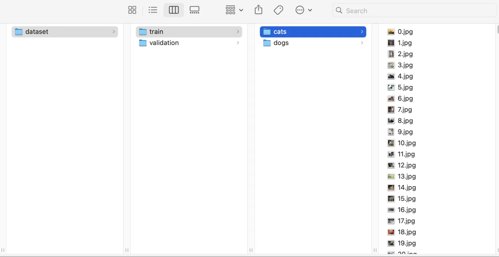
Image classification
Here’s the plan for this section: we’ll first go through the code with a fairly superficial explanation of what’s happening, and only afterward try to understand what’s going on under the hood.
Preparation of images
In the next step, we’re going to prepare our images for processing. This preparation consists of adding random elements to the images without corrupting them: every image gets rotated, shifted, rescaled, and has some new pixels added, in order to prevent the same kind of order bias we discussed when talking about shuffling the files. Because our final model needs to be able to handle images it has never seen before, it makes sense to prepare it for that in advance — let’s augment our images in a way that introduces some element of uncertainty.
# Data augmentation and normalization for training
train_datagen = ImageDataGenerator(
rescale=1./255,
rotation_range=40,
width_shift_range=0.2,
height_shift_range=0.2,
shear_range=0.2,
zoom_range=0.2,
horizontal_flip=True,
fill_mode='nearest'
)Here we’re preparing an object that holds a set of rules, which will be applied to the images a bit further down.
I can show you how this works using an augmented image, and then we can discuss this step in more detail.
Let’s look at the original image before augmentation:
And here’s the result of augmentation, using the property values described in the object above:
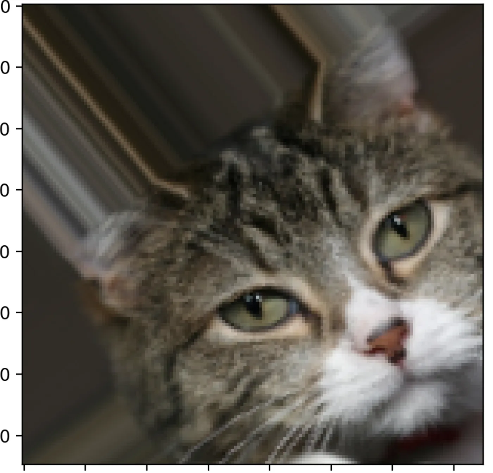
You can easily see that the image has been changed considerably by the augmentation rules, while still keeping the object recognizable (I hope the cat is still identifiable). It’s also worth mentioning that augmentation uses random parameters: there’s no guarantee the same or even similar changes will be applied to every image, because all the numeric parameters in ImageDataGenerator are drawn from a random range of values.
As a result, we get a more varied dataset, which adds robustness and makes it more stable. For academic interest, here’s what each parameter does, though understanding them isn’t necessary for following the next steps. Also, please don’t ask me why I chose these particular parameter values.
ImageDataGenerator parameters
rescale=1./255— Purpose: normalizes the pixel values of the images. Effect: converts pixel values from the range [0, 255] to the range [0, 1]. This normalization helps speed up convergence during training.rotation_range=40— Purpose: randomly rotates images. Effect: each image can be randomly rotated by up to 40 degrees clockwise or counterclockwise.width_shift_range=0.2— Purpose: randomly shifts images horizontally. Effect: each image can be randomly shifted horizontally by up to 20% of the image’s width.height_shift_range=0.2— Purpose: randomly shifts images vertically. Effect: each image can be randomly shifted vertically by up to 20% of the image’s height.shear_range=0.2— Purpose: applies random shearing transformations. Effect: each image can be sheared (tilted) by an intensity of up to 20%.zoom_range=0.2— Purpose: randomly zooms in on images. Effect: each image can be zoomed in by up to 20%.horizontal_flip=True— Purpose: randomly flips images horizontally. Effect: each image has a 50% chance of being flipped horizontally.fill_mode='nearest'— Purpose: determines how newly created pixels are filled in after a transformation. Effect: pixels newly created by transformations (like shifts and rotations) are filled in with the nearest pixel value from the original image.
We’re going to apply the same approach to the validation dataset, but with only one parameter: rescaling. That’s because, for validation, we want to keep the images unchanged, so we’re evaluating our trained model on realistic images.
# Only rescaling for validation
validation_datagen = ImageDataGenerator(rescale=1./255)Now that our rules for augmenting the images are ready, we can actually start working with the images. Keep in mind that although some calculation is already happening at this point, it’s only image processing — the neural network itself hasn’t been initialized yet.
train_generator = train_datagen.flow_from_directory(
train_dir,
target_size=(150, 150),
batch_size=20,
class_mode='binary'
)
validation_generator = validation_datagen.flow_from_directory(
validation_dir,
target_size=(150, 150),
batch_size=20,
class_mode='binary'
)Since both invocations are basically the same, differing only in the directory name, let’s discuss what’s happening using the first one as an example.
Given the name flow_from_directory, it’s easy to guess that this function reads files from a directory — and that’s exactly right. This method is meant for reading long sequences of data from storage in cases where it wouldn’t be reasonable to keep it all in memory at once.
train_dir is, obviously, the name of the directory the method reads images from, and target_size tells it to resize every image. This is done to keep the dataset consistent, which matters for the calculations that come later. The meaning of batch_size is pretty straightforward, so let’s focus on class_mode. This defines one of the function’s main outputs — processing images and labeling them. In practice, that means the result of this process is a pair: a processed image plus a label. That label is binary, because we asked for class_mode='binary', and the final result is a sequence like:
image1 - 0
image2 - 0
image3 - 0
…
image2000 - 1
image2001 - 1You can think of this as manually associating a property — what’s called a “label” in Machine Learning — drawn from the set {0, 1}, with every image. Once the method finishes its job, we end up with a labeled dataset.
You might be wondering how this actually works. The method scans through train_dir and fetches the names of its subdirectories, which gives it ['cats', 'dogs']. This list is then sorted alphabetically, so the first name gets label 0 and the second gets label 1. The result is our binary-labeled dataset. We’re lucky here to only have two classes to distinguish — if we had more than two, we’d need something more elaborate than a single binary label.
Coming closer to the neural network
We’re getting close to the most intense part of our process: training our model, or more precisely, our neural network. Let me show you the main actor of this show, and we’ll discuss what it actually is.
model = Sequential([
Conv2D(32, (3, 3), activation='relu', input_shape=(150, 150, 3)),
MaxPooling2D(2, 2),
Conv2D(64, (3, 3), activation='relu'),
MaxPooling2D(2, 2),
Conv2D(128, (3, 3), activation='relu'),
MaxPooling2D(2, 2),
Conv2D(128, (3, 3), activation='relu'),
MaxPooling2D(2, 2),
Flatten(),
Dense(512, activation='relu'),
Dropout(0.5),
Dense(1, activation='sigmoid')
])So this is exactly what we’re going to train. If you’re familiar with the software development process, you can loosely think of this by analogy: you’re looking at code that will be compiled and run a bit later. Right now we’re at the first stage — “coding” something that will serve as a template for the calculations to come.
The good news is that the result of this invocation is, quite literally, a neural network, corny as that might sound. You might find that hard to believe, so let me prove it to you.
If you’ve been following along, you already have Python installed, so you can run this code without any trouble. Let’s do exactly that — keep in mind model here is the same one we defined above. We’re just going to peek under its hood.
from tensorflow.keras.models import Sequential
from tensorflow.keras.layers import Conv2D, MaxPooling2D, Flatten, Dense, Dropout
from tensorflow.keras.utils import plot_model
# Define the model architecture
model = Sequential([
Conv2D(32, (3, 3), activation='relu', input_shape=(150, 150, 3)),
MaxPooling2D(2, 2),
Conv2D(64, (3, 3), activation='relu'),
MaxPooling2D(2, 2),
Conv2D(128, (3, 3), activation='relu'),
MaxPooling2D(2, 2),
Conv2D(128, (3, 3), activation='relu'),
MaxPooling2D(2, 2),
Flatten(),
Dense(512, activation='relu'),
Dropout(0.5),
Dense(1, activation='sigmoid')
])
# Visualize the model architecture
plot_model(model, to_file='cats_vs_dogs_model.png', show_shapes=True, show_layer_names=True)If you run this code, the call to plot_model(model, to_file='cats_vs_dogs_model.png', show_shapes=True, show_layer_names=True) will save a PNG file in your script’s directory that looks like this (I’m including it in full because it visualizes a fairly complicated structure, and it can serve as useful feedback from what might otherwise feel like a black box):
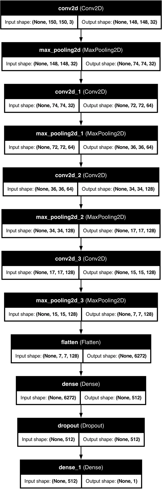
We need to go through this thoroughly, because this is the “code,” or if you prefer, the “skeleton,” of our calculation process.
In more formal terms, this is a visualization of a neural network’s calculation layers. You may have heard before that a neural network is a sequence of units, called “neurons,” connected together into a mesh, or network. Looking at this diagram, you’ll notice there are nodes here too, connected sequentially. That gives you an analogue for a somewhat loose definition of a neural network, but it’s a good place to start.
Let me put this image and the code that creates it side by side.
model = Sequential([
Conv2D(32, (3, 3), activation='relu', input_shape=(150, 150, 3)),
MaxPooling2D(2, 2),
Conv2D(64, (3, 3), activation='relu'),
MaxPooling2D(2, 2),
Conv2D(128, (3, 3), activation='relu'),
MaxPooling2D(2, 2),
Conv2D(128, (3, 3), activation='relu'),
MaxPooling2D(2, 2),
Flatten(),
Dense(512, activation='relu'),
Dropout(0.5),
Dense(1, activation='sigmoid')
])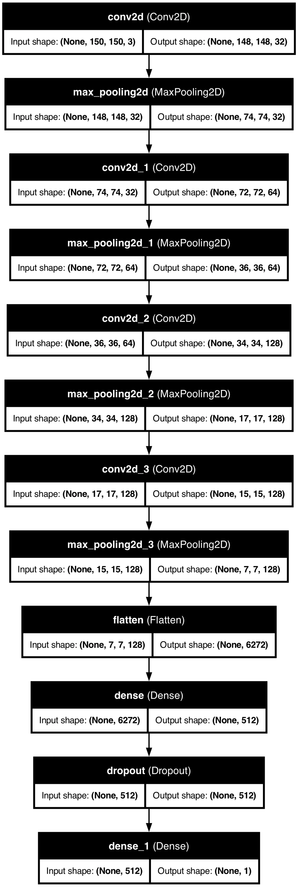
You don’t need to be Sherlock Holmes to spot the correspondence between the method and its result. If you think every parameter creates something depicted on the diagram as a black-and-white block, then yes, that’s exactly right — even though some blocks repeat, each one has its own properties.
Convolution
Let’s talk about this in detail. I’ll use the terms “layer” and “sequence of layers,” since both of them correspond well to an intuitive understanding, as well as to what’s actually happening in this abstraction.
So we’re talking about Convolutional Neural Networks, which are a great fit for image classification, because they don’t process an entire image “at once” as one big matrix of pixels. Instead, they run a convolution over certain parts of the image, pursuing two goals: reducing the amount of computation (though that’s less of a concern nowadays) and normalizing the images.
Here’s what that looks like in motion (by the way, this gif was itself created by a neural network):
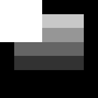
Each movement of the white rectangle over the original image (a cat or dog, in our case) covers some part of the pixels, which become the argument to a calculation method. That, without going into further detail, is a convolution. There are, of course, plenty of computational procedures you could apply during convolution to solve a specific problem, but the good news is that the majority of common cases are already well known — you don’t need to research your own from scratch, an existing analogy is usually enough.
We’ll walk through every parameter passed to Sequential() in order, but let me start with the simpler of the two methods, MaxPooling2D. In my opinion, introducing its logic first gives you a general sense of how these computations work, and then we can circle back to Conv2D.
First invocation of MaxPooling2D(2, 2)
We have this:
MaxPooling2D(2, 2)Trust me, if this is your first time reading it, the academic definition won’t tell you much — except maybe the “2D” part, which hints that this applies to flat objects. That part is absolutely right, but let me show you how MaxPooling2D actually works with a simple example.
So we have some input:
Input Feature Map (4x4):
[
[1, 3, 2, 4],
[5, 6, 7, 8],
[9, 10, 11, 12],
[13, 14, 15, 16]
]Let’s introduce two terms we’ll need here.
- Pool Size — the pool size specifies the dimensions of the window (e.g., 2x2 — for images you can read “pixels”) that slides over the input feature map. For a 2x2 pool size, the window covers 2x2 regions of the input feature map.
- Stride — the stride specifies how much the window moves after each operation. By default, for max pooling, the stride is the same as the pool size, so for a 2x2 pool, the stride is 2.
The pooling operation basically works the same way as the animation shown above.
As an example: let’s apply 2x2 max pooling with a stride of 2.
First window (top-left 2x2 region)
[
[1, 3],
[5, 6]
]Remember what the method’s name tells us? Max …. Right — the result of max pooling on this window is 6, because that’s the maximum value in this particular window. Let’s move on! Shift the window to the right — what do we get? Correct!
Second window (top-right 2x2 region)
[
[2, 4],
[7, 8]
]The maximum value here is 8. Onward!
Third window (bottom-left 2x2 region)
[
[9, 10],
[13, 14]
]The maximum here is 14.
Fourth window (bottom-right 2x2 region)
[
[11, 12],
[15, 16]
]It should already be clear what the final result looks like:
Output Feature Map (2x2):
[
[6, 8],
[14, 16]
]I hope this example helped show you the essence of pooling. You can think of it as “aggregating,” or condensing, the pixel matrix in order to reduce each image’s dimensions and, more importantly, extract the most prominent value from a given window — forming a (probably) more informative matrix of data in the process. If your reaction is that this computation is pretty simple, and it’s not at all obvious how it helps with our actual task of image classification, I’d say: the most widely used results weren’t discovered because some brilliant mind sat down with pencil and paper and declared this the one true method. Rather, people just tried it, and it turned out that even a method this simple works.
But honestly, my main goal here is to strip away the sense of magic that tends to surround neural networks. So far, you’ve seen that it’s really all just computation. It’ll stay that way going forward.
First invocation of Conv2D
Back to the code:
Conv2D(32, (3, 3), activation='relu', input_shape=(150, 150, 3)),This is the first argument passed to Sequential.
Here we’re asking to create the first layer of our convolutional neural network (CNN), with the following properties:
- 32 filters (will be increased in the next invocation)
- Each filter has size 3x3 pixels
- activation='relu' — the ReLU (Rectified Linear Unit) activation function is applied here, which introduces non-linearity and helps the network learn complex patterns. For now, you can just think of this as a computational technique — that’s enough to know on a first read.
- input_shape=(150, 150, 3) — the input shape of the images is 150x150 pixels with 3 color channels (RGB). This is specified only for the first layer.
Pause here for a second and think again about what we’re doing: we take every image from our folder and pass it through a sequence of layers, each of which applies its own computational procedure.
Now I have no choice but to describe this “computational procedure,” hoping you’ll be able to draw an analogy with the previous section.
Here’s the vocabulary we’ll need:
- Input Shape —
input_shape=(150, 150, 3): this specifies that the input to the network is an image of size 150x150 pixels with 3 color channels (RGB). - Convolution Operation —
filters=32: this means the layer will learn 32 different filters, each producing a separate output feature map.kernel_size=(3, 3): each filter is 3x3 pixels, and slides over the input image to compute the output. - Sliding Window — the 3x3 filter (kernel) slides over the input image. At each position, it performs an element-wise multiplication with the part of the image it’s currently covering and sums the results to produce a single value in the output feature map. This is repeated for all positions to produce a complete feature map.
- Activation Function —
activation='relu': the Rectified Linear Unit (ReLU) activation function is applied to the output of the convolution operation. ReLU sets all negative values to zero and keeps positive values unchanged, introducing non-linearity into the model.
If you read that without fully understanding it, let me walk through the process with another example. This time we’ll use a 5x5-pixel grayscale image (meaning each pixel’s value is restricted to a fixed range rather than full RGB — it doesn’t matter for demonstrating the principle). Such an image can be represented in Python (or in linear-algebra terms, if you prefer) like this:
Input image
[
[1, 2, 3, 0, 1],
[0, 1, 2, 3, 1],
[3, 2, 1, 0, 2],
[1, 0, 3, 2, 1],
[2, 1, 0, 1, 0]
]We’ll also use the filter we described earlier, in the method invocation:
[
[1, 0, -1],
[1, 0, -1],
[1, 0, -1]
]If you still remember my clumsy animation showing the filter moving across the image, we’re going to simulate every step of that movement, this time using actual values from the image and the filter.
So we start at the top-left corner. Our filter covers a part of the image; extracting those values gives us:
[
[1, 2, 3],
[0, 1, 2],
[3, 2, 1]
]Let’s do an element-wise multiplication between these extracted pixel values (remember, we’re working with a grayscale image) and our filter. Feel free to check this with Excel, Python, or whatever you prefer (note: I’m omitting multiplication signs between digits that share the same sign):
(1*1 + 2*0 + 3*(-1)) + (0*1 + 1*0 + 2*(-1)) + (3*1 + 2*0 + 1*(-1))
= (1 + 0 - 3) + (0 + 0 - 2) + (3 + 0 - 1)
= -2 - 2 + 2
= -2And obviously the first result of applying our filter is -2.
Next, shift the filter one step to the right over the image, and we get these extracted pixel values:
[
[2, 3, 0],
[1, 2, 3],
[2, 1, 0]
]We already know what our filter looks like, so let’s do the element-wise multiplication again:
(2*1 + 3*0 + 0*(-1)) + (1*1 + 2*0 + 3*(-1)) + (2*1 + 1*0 + 0*(-1))
= (2 + 0 + 0) + (1 + 0 - 3) + (2 + 0 + 0)
= 2 - 2 + 2
= 2The result is 2.
I’ll spare you the rest of the process, since I hope it’s already pretty clear by now. Here’s the intermediate state of the output:
[
[-2, 2, ...],
[..., ...],
...
]ReLU activation then tells us that every negative value in this matrix becomes zero, so:
[
[0, 2, ...],
[..., ...],
...
]This is a shortened version of the result, but I hope the gist of the computation is clear.
Let’s recap what we just did: we load every available image and pass it through a sequence of layers, each doing its own part of the work. Exactly how many layers to use, and which specific values to pass in, is a separate and fairly large topic that I’ll skip in this text.
Next invocations of Conv2D and MaxPooling2D
Let me paste the code we’ve been focusing on once more:
model = Sequential([
Conv2D(32, (3, 3), activation='relu', input_shape=(150, 150, 3)),
MaxPooling2D(2, 2),
Conv2D(64, (3, 3), activation='relu'),
MaxPooling2D(2, 2),
Conv2D(128, (3, 3), activation='relu'),
MaxPooling2D(2, 2),
Conv2D(128, (3, 3), activation='relu'),
MaxPooling2D(2, 2),
Flatten(),
Dense(512, activation='relu'),
Dropout(0.5),
Dense(1, activation='sigmoid')
])Looking closely at this code, you’ll notice that Conv2D() is invoked several times — four, to be precise — and with each invocation the number of filters increases: 32, 64, 128, and 128 again. And really, nothing stops us from doing the same in our own experiments.
The reason for this sequential invocation is that each layer extracts increasingly complex and abstract data from the image. This is thought to add more levels of complexity to the model while, in turn, reducing the spatial size of the image. If this explanation doesn’t fully satisfy you, believe me, you’re not alone. This layered approach is the result of researchers training models over and over, an enormous number of times, before arriving at something meaningful. If you want to dig deeper into this, be prepared to accept some things that aren’t obvious or intuitive at first. That understanding comes from experience, and you’ll have to build it yourself, the same way everyone else did.
Let me prove to you once more that invoking this pair together — Conv2D(32, (3, 3), activation='relu', input_shape=(150, 150, 3)) followed by MaxPooling2D(2, 2) — brings a fairly significant benefit to our computation.
First pair
Conv2D(32, (3, 3), activation='relu', input_shape=(150, 150, 3))
MaxPooling2D(2, 2)gives us this (remembering that 150x150 is the size of our images). There are actually two things shrinking the spatial size here, not one: Conv2D itself, and MaxPooling2D after it. By default Conv2D uses padding='valid', which means it does not pad the image before sliding the 3x3 filter over it — a filter centered on the outermost pixels would stick out past the edge, so those positions are simply skipped. For an N×N input and a 3x3 filter this leaves an output of size (N − 3 + 1) × (N − 3 + 1), i.e. 2 pixels smaller per side. Only then does MaxPooling2D halve what’s left:
- Conv2D: applies 32 filters (3x3, no padding) to the 150x150 input image, producing 32 feature maps of size 148x148 (150 − 3 + 1 = 148).
- MaxPooling2D: reduces the spatial dimensions of each feature map from 148x148 to 74x74.
Second pair
Conv2D(64, (3, 3), activation='relu')
MaxPooling2D(2, 2)- Conv2D: applies 64 filters to the 32 feature maps from the previous pair, each 74x74, producing 64 feature maps of size 72x72 (74 − 3 + 1 = 72).
- MaxPooling2D: reduces the spatial dimensions of each feature map from 72x72 to 36x36.
Third pair
Conv2D(128, (3, 3), activation='relu')
MaxPooling2D(2, 2)- Conv2D: applies 128 filters to the 64 feature maps, each 36x36, producing 128 feature maps of size 34x34 (36 − 3 + 1 = 34).
- MaxPooling2D: reduces the spatial dimensions of each feature map from 34x34 to 17x17.
Fourth pair
Conv2D(128, (3, 3), activation='relu')
MaxPooling2D(2, 2)- Conv2D: applies 128 filters to the 128 feature maps, each 17x17, producing 128 feature maps of size 15x15 (17 − 3 + 1 = 15).
- MaxPooling2D: reduces the spatial dimensions of each feature map from 15x15 to 7x7 (15 // 2 = 7 — the one leftover row/column that doesn’t make a full 2x2 window is simply dropped).
If you keep an eye on how the output sizes shrink at each MaxPooling2D step, you’ll notice they drop drastically — which gives us a real, meaningful benefit: smaller feature maps to process during training.
Flatten() invocation
This is a great case of a method name matching exactly what it does. Flatten() literally flattens our (by now heavily processed) 2D input into a 1D output. That means the next computational step will work not with a matrix, but with a single-row vector. Mathematically, we’re talking about concatenating the elements of a 2D input into 1D.
For example, in our image classification case, right before flatten() is invoked, our input is a tensor of shape (7, 7, 128). Here’s how to think about that: a tensor is a mathematical object with a width and a height — 7 and 7, respectively — and a third parameter, informally called depth, which comes from the results of the previous layers’ computations: a sequence of feature maps, each with that same width and height. You can picture this as a stack of 128 matrices, each 7x7. Or, more figuratively, each of those 128 7x7 matrices is a “snapshot” of the original image, and every snapshot captures some unique characteristic that will be used during classification.
By the way, the next image, a visualization of this, was itself created by a neural network — but that’s a completely different story.
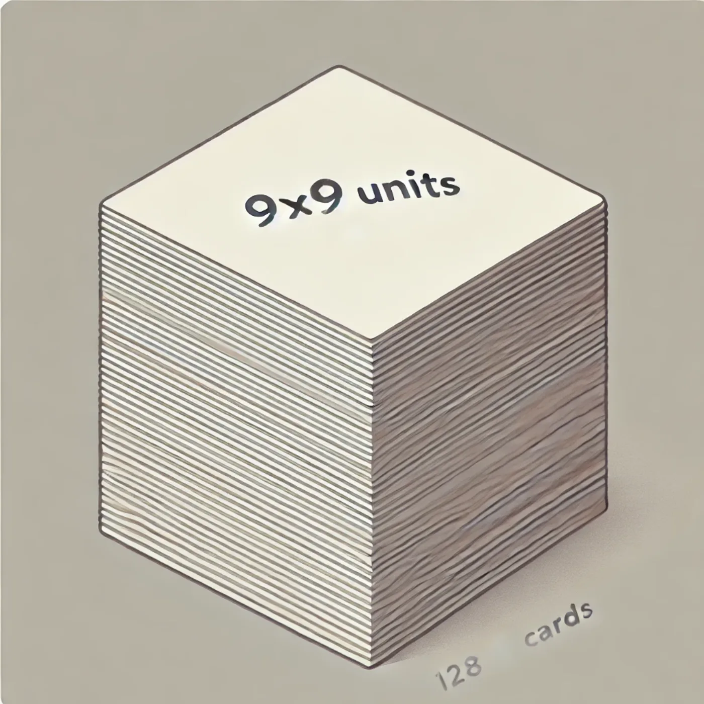
So before flatten() is invoked, we have this tensor structure; after it’s invoked, we get a 1D structure, formed by concatenating the 49 values from each feature map (each “card” in the picture above), repeated for all 128 of them. So it’s easy to calculate the total number of elements in this structure:
Flattened Shape: (7 * 7 * 128) = (6,272)Let me repeat once more: all the “magic” in this fairly long image-classification procedure is, in reality, just a sequence of (relatively) trivial calculations. Why this particular sequence gets us the result we want is an entirely different question, one I’ll leave outside the scope of this text.
Dense() invocation
More precisely:
Dense(512, activation='relu'),Let’s dig into the anatomy of what’s happening here as well.
We need to introduce a couple of new terms here: weights and biases.
But first, let’s pin down the values we see in this method invocation:
512(Neurons) — the number of neurons in this dense layer.activation='relu'— the activation function applied to the output of each neuron:
…which, as you can easily see, sets every negative value to zero and leaves positive values unchanged.
Keeping in mind that our input here is a 1D structure containing 6,272 items, we’ll define weights as a numeric value associated with every neuron — and since our layer has 512 neurons (the first parameter to Dense), the total number of weights works out to 6,272 × 512 = 3,211,264.
Every neuron also has its own bias, which is likewise a per-neuron characteristic — so we end up with 512 biases here.
Now we need to add a bit more complexity to our computation, since we have to introduce a weighted sum for every neuron. The formula for that looks like this:
What do we have here?
- \(z_j\) — the result of our calculation.
- \(w_{ij}\) — this is the weight connecting neuron i to neuron j. Remember, our input is a one-dimensional structure of 6,272 values, and every neuron has its own array of weights, one per input value, associated with it.
- \(x_i\) — our input, specifically each individual element from our 6,272-item vector.
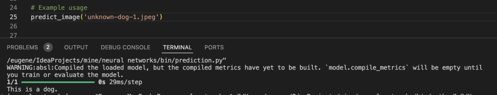
- \(b_j\) — the bias for the j-th neuron.
In addition to our input \(x_i\), we have two more arrays here: weights and biases. At this stage, both get initialized with random values — weights close to zero, biases exactly zero. I’ll illustrate this with Python code you can run yourself to fully follow along; I’ll also include screenshots so you can compare what I got with what you get.
The example below uses Dense(1, activation='relu') — it doesn’t make technical sense in our actual model, and it’s here purely for demonstration.
So, we have just a single neuron. Let’s generate the weight array for it — one weight per input value:
np.random.seed(0) # For reproducibility
weight_vector = np.random.uniform(-0.05, 0.05, 6272)Here’s what my output looked like, in Google Colab:
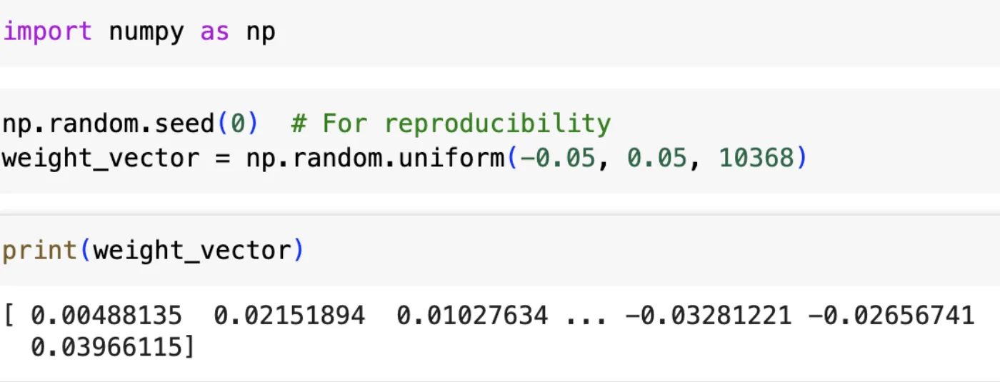
Of course, Python only prints a small part of this array. The initialization range here was chosen somewhat arbitrarily, but it’s close to realistic values — small numbers, near zero.
The bias is just zero.
bias = 0.0As for the input data for this procedure — remember, our real input comes from the previous step. Here’s a demonstration:
input_vector = np.random.rand(6272) # Example input vector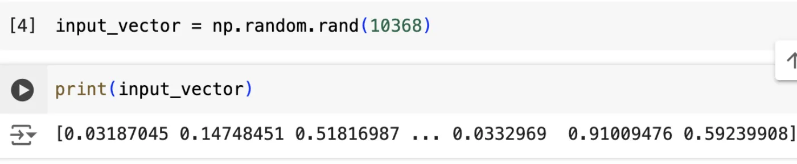
Next, following the formula given earlier:
z = np.dot(weight_vector, input_vector) + biasAnd here’s the result (the dot product plus the bias, which is still zero at this point):
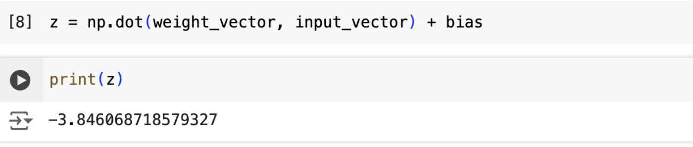
And the final step: ReLU activation.
a = max(0, z) # ReLU activationIn short, this just means keeping the result if it’s positive, and replacing it with zero otherwise.
So that’s essentially what “dense” means here: we take a fairly long input and condense it into a single scalar value instead of a vector. And don’t forget, this was all for just one neuron — our actual layer has 512 of them, per the parameter we passed in.
If at this point you’re thinking you don’t really understand why we’re doing any of this — what weights and biases actually are, or why we initialize them at zero or small random values — I completely understand. Keep reading, and I hope you’ll find the answer below.
Why are we doing this? Getting ready to train
Speaking of the ultimate purpose of our calculation — we’re talking about image classification. Or, put differently: we’ve arranged an image’s pixels in some structured way (literally, a 1D sequence of pixel values), and we need to compare what we get against what we expect. Since we have a simple binary (cat-vs-dog) classification problem, we can state our purpose more precisely: compute something from the pixels of an unknown image, and compare the result against our two labels. Remembering that cats were assigned 0 and dogs were assigned 1, more concretely: let’s check whether this value is close to 0 (cat) or close to 1 (dog).
So, in every case, for every neuron — each equipped with weights and biases — we’re able to make this same kind of comparison against our target value.
Because we have both a calculated value and an expected value, we’re able to talk about the gap between them — not just in the abstract, but as something we can actually compute.
Now let’s consider one more thing. Basically, if we have a formula like this one (shown above) used to calculate the output \(z_j\) — why would we even expect that this kind of synthetic result, built by multiplying and summing our (initially small, randomly initialized) weights and adding a bias that starts at zero, gives us something we can meaningfully compare against 0 or 1?
If you’re feeling confused, you’re not the only one. If we just left our model as-is, computing that formula a single time, that would be one of the most futile exercises imaginable. Really. But here’s the secret: our model has parameters we can adjust — the weights — plus a parameter that tells us how close (or far) our result is from what we want, the bias. Thanks to that, we can actually do something about it: we can tune those parameters until the result gets as close to 0 or 1 as we like. That tuning is essentially what the word “Learning” in “Machine Learning” refers to. We’re going to train our model to produce what we want, by changing its weights!
So no magic at all!
Let’s go back to the example from the previous section. There, we worked through a single neuron. But per our Python code, we actually have 512 such neurons, which means this whole process gets repeated at least 512 times.
Keep in mind that every neuron gets its own freshly generated set of weights and its own bias. Then, during training, those weights get adjusted so that \(z_j\) ends up relatively close to 1 whenever we’re trying to identify a dog, as part of our binary classification process.
OK, we’re getting closer and closer to the final stage of the model. One of our remaining stops is Dropout(0.5).
Invocation of Dropout(0.5)
Let me first explain what this invocation does (by the way, this is a good example of a well-named function), and then we’ll discuss why we need it.
As you’ll remember, the previous step gave us 512 neurons, each with its own set of weights and a bias. In this step — and I know this sounds strange — we’re going to randomly drop some of those neurons. Concretely, the parameter passed to Dropout(0.5) means each neuron has a 50% chance of being removed from the calculation. Let me visualize this.
For simplicity, let’s pretend that our previous, dense layer produced only six neurons instead of 512:
Layer 1 (Dense):
[Neuron1] [Neuron2] [Neuron3] [Neuron4] [Neuron5] [Neuron6]Across three successive iterations, our first layer might look like this:
Iteration 1:
[Neuron1] [Neuron2] [0] [0] [Neuron5] [Neuron6]
Iteration 2:
[0] [Neuron2] [Neuron3] [0] [Neuron5] [0]
Iteration 3:
[Neuron1] [0] [Neuron3] [Neuron4] [0] [Neuron6]If you look at the behavior shown here, you’ll notice that on every iteration roughly half the neurons have a chance of being dropped from training and replaced with zero, shown in my diagram as [0].
If you’re wondering why we’d deliberately remove parts of our own computation, I could give you a list of not-so-obvious reasons that probably won’t mean much on a first read. The main one is preventing overfitting — a model behaving well on training data (remember, we split our dataset into training and validation earlier) but failing on validation data. Don’t ask how someone first discovered that dropping out parts of the computation chain like this actually helps; intuitively, you can think of it as deliberately making training conditions a bit harder than they need to be. It’s believed to make a model more durable and better at generalizing, because it introduces an element of randomness into the learning process. Worth noting: dropout is only active during training and gets switched off during validation.
Invocation of Dense(1, activation='sigmoid')
You’ll recall we already dealt with this method when discussing the 512 neurons, weights, and biases. This is the final layer of our model, and this single neuron represents our neural network’s output. Put simply, this neuron produces the value that gives us our final answer: does this set of pixels represent a dog or a cat? You can picture this as a bundle of connection lines running from every neuron in the previous layer into this one final neuron, which produces the layer’s final output.
The activation='sigmoid' part needs some explanation. For this neuron, we have the same story as before: a weighted sum of outputs (with weights randomly initialized and bias starting at zero, just like the previous Dense invocation):
followed by an activation function that’s a bit less trivial than the activation='relu' we saw in the previous section. So this activation function looks like this:
As you can see, the calculated value \(y\) always falls between 0 and 1, so we can treat it as a probability — specifically, the likelihood that the given image is a dog.
If you want to see a visualization of this final layer yourself, you can try running the code below (be patient — it uses the real number of neurons, 6,272, so it won’t be instant):
import matplotlib.pyplot as plt
import networkx as nx
# Create a graph
G = nx.Graph()
# Number of neurons in the previous layer
previous_layer_neurons = 6272
# Add nodes for the previous layer
for i in range(previous_layer_neurons):
G.add_node(f'Prev_{i}')
# Add node for the final neuron
G.add_node('Final')
# Add edges between previous layer neurons and the final neuron
for i in range(previous_layer_neurons):
G.add_edge(f'Prev_{i}', 'Final')
# Draw the graph
pos = nx.spring_layout(G, seed=42)
plt.figure(figsize=(12, 8))
nx.draw(G, pos, with_labels=False, node_size=20, node_color='blue')
nx.draw_networkx_nodes(G, pos, nodelist=['Final'], node_size=200, node_color='red')
plt.title('Visualization of Final Neuron and Connections')
plt.show()But I can show you the result anyway. The legend here is simple: the big red dot in the center is our final neuron, created by Dense(1, activation='sigmoid'), and the many blue dots are the connections coming in from the previous layer’s neurons.
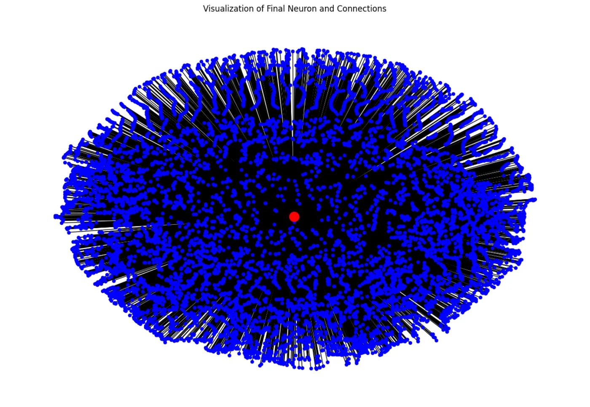
And okay — congratulations! You’ve just hit a pretty big milestone in understanding what this whole chunk of code means:
model = Sequential([
Conv2D(32, (3, 3), activation='relu', input_shape=(150, 150, 3)),
MaxPooling2D(2, 2),
Conv2D(64, (3, 3), activation='relu'),
MaxPooling2D(2, 2),
Conv2D(128, (3, 3), activation='relu'),
MaxPooling2D(2, 2),
Conv2D(128, (3, 3), activation='relu'),
MaxPooling2D(2, 2),
Flatten(),
Dense(512, activation='relu'),
Dropout(0.5),
Dense(1, activation='sigmoid')
])Let me give you a short summary of what we’ve covered and the key points worth remembering:
- We built a model for the purpose of image classification.
- Nothing has actually been calculated yet — what we’ve defined so far is only the recipe for how the calculation will happen later.
- Our model is a sequence of layers.
- Most of those layers are convolutional. That means the model doesn’t process the whole image as one unit — the image gets split into smaller parts, each characterized by some numeric value, so the whole image effectively gets convolved, or “wrapped up.”
- The actual calculation will flow gradually from the first layer to the last.
- A large part of our computation is about finding the right values for the weight and bias vectors, so that the final output ends up close to 1 (when training on dogs) or close to 0 (when training on cats).
- To get there, we’ll go through many iterations, adjusting the weights and biases each time.
So, let’s go further!
Getting our model ready to be useful
Looking at our code, you’ll notice we need to get to the following lines:
model.compile(loss='binary_crossentropy',
optimizer=Adam(learning_rate=0.001),
metrics=['accuracy'])By and large, if the previous step was about defining the model itself, as a sequence of layers, this step is about defining the numeric parameters that shape how it behaves. Put simply, we’re setting the rules for how well our model learns, and how fast it does so.
Let’s go through the parameters of this call:
loss='binary_crossentropy' — this loss function measures how well our model’s predictions match the true labels. It’s specifically designed for this kind of classification problem — binary classification — and its formula looks like this (to be honest, if this is your first read, this part isn’t essential):
optimizer=Adam(learning_rate=0.001) — this defines how the weights get updated. Remember, we talked about arrays of weights and biases initialized with random values close to zero (or exactly zero, for biases). This parameter controls the step size used when updating those weights during training, in order to push the value of \(z_j\) as close to 1 as possible. Adam stands for Adaptive Moment Estimation, an optimization algorithm that combines the advantages of two other extensions of stochastic gradient descent, AdaGrad and RMSProp. It adapts the learning rate for each parameter individually.
metrics=['accuracy'] — this acts as a feedback signal, letting us see what’s happening inside the model during training. You can think of it as a metric the model reports back to us, which we use to judge how well things are going.
Time to train!
We’re quickly approaching the final stage of our goal, and here’s the main event of our whole process:
# Train the model
history = model.fit(
train_generator,
steps_per_epoch=steps_per_epoch,
epochs=30,
validation_data=validation_generator,
validation_steps=validation_steps
)This is exactly the point where calculation begins. From here, our model starts to actually change — meaning its weights and biases get updated — not all at once, of course, but over a number of iterations that, in Machine Learning terms, are called epochs. Notice this is a single hardcoded parameter here: it’s the number of iterations our model needs to go through to produce something worth saving to a file, so we don’t have to repeat the whole training process every time.
Let me remind you what train_generator is:
train_generator = train_datagen.flow_from_directory(
train_dir,
target_size=(150, 150),
batch_size=20,
class_mode='binary'
)validation_generator is very similar:
validation_generator = validation_datagen.flow_from_directory(
validation_dir,
target_size=(150, 150),
batch_size=20,
class_mode='binary'
)So both of these are objects that have our images ready for training, by reading them from the corresponding directories.
We still need to understand what steps_per_epoch=steps_per_epoch and validation_steps=validation_steps actually are.
Here’s a snippet:
# Calculate steps_per_epoch and validation_steps
steps_per_epoch = train_generator.samples // train_generator.batch_size
validation_steps = validation_generator.samples // validation_generator.batch_sizeLooking at this code, you’ll notice that the values we’re interested in are the result of dividing two properties of the corresponding objects.
We could just leave it at that, but since we like digging into these details, let’s uncover this one too. Earlier, we defined two objects:
train_datagen = ImageDataGenerator(
rescale=1./255,
rotation_range=40,
width_shift_range=0.2,
height_shift_range=0.2,
shear_range=0.2,
zoom_range=0.2,
horizontal_flip=True,
fill_mode='nearest'
)and a simpler one:
validation_datagen = ImageDataGenerator(rescale=1./255)If you run our script, you’ll see two lines printed to the console, which on my laptop look like this:
Found 24998 images belonging to 2 classes.
Found 23652 images belonging to 2 classes.The number in the first line is the count of files loaded by train_datagen, stored in train_generator.samples. The second line shows the same thing, but for validation_datagen. You could count the files yourself if you wanted, but more simply, these are just the number of files in our training and validation datasets, respectively. And since our training process doesn’t process files one at a time but in batches, we can see the batch size reflected in the logs as 20 — not because Keras defaults to that value (its actual default is 32), but because we explicitly passed batch_size=20 to flow_from_directory() above.
A note on the numbers above: 24,998 + 23,652 = 48,650, which is almost double the roughly 25,000 images (12,500 cats + 12,500 dogs) in the raw dataset, and the ratio between the two (~51/49) doesn’t look like the 80/20 split the code performs. This particular log was captured before the split step cleared out dataset/train and dataset/validation before repopulating them — since those folders weren’t cleared, and the shuffle has no fixed seed, running the split more than once let files pile up across runs, and could even let the same image drift into both train and validation on different runs. With the folders cleared before every run (see the earlier code block), a single clean run should instead give you something close to an actual 80/20 split — roughly 20,000 files in train and 5,000 in validation for a ~25,000-image dataset.
As a result, we can print out the following values:
train_generator.samples : 24998
train_generator.batch_size : 20
Steps per epoch: 1249
Validation steps: 1182and move on.
Training and its results
First of all, be patient — this process isn’t fast. Depending on your computer (I ran this code, and wrote this article, on a MacBook Pro M3 Pro), it really does take a while. On top of that, we need to hold onto the results of this computation, because it’s expensive: if we had to retrain the model from scratch every time we wanted to classify an image, we’d rightly be called wasteful. So instead, we’re going to save the result of our work to a dedicated .h5 file, so you can reuse the trained model from another script.
Once training is finished and our weights and biases have settled into values that push the output close to 1 or 0, we do this in our code:
model.save('cats_vs_dogs.h5')Let me repeat — this is exactly what we need. It’s a set of feature maps, effectively capturing averaged characteristics of dogs and cats, against which any new image we want to classify will be compared.
So it’s time to launch our script and see what happens. I really hope that if you’ve read this far, you’re already able to run Python code, so I’ll skip explaining that step. One thing worth mentioning if you’ve never done this before: it takes time, and looks something like this.
Epoch 1/30
1249/1249 — 164s 130ms/step - accuracy: 0.5008 - loss: 0.6947 - val_accuracy: 0.4991 - val_loss: 0.6931
Epoch 2/30
1249/1249 — 0s 80us/step - accuracy: 0.6500 - loss: 0.6916 - val_accuracy: 0.6250 - val_loss: 0.6930
Epoch 3/30
644/1249 — 1:01 102ms/step - accuracy: 0.4949 - loss: 0.6933If you read your output carefully, you’ll notice the calculation is broken up into iterations called epochs, and there are 30 of them, exactly as we set in our code above. You’ll also see some warnings — the training process is actually fairly fragile and can be interrupted for several reasons, though in our relatively simple case, I doubt it will be. By the way, this is one of the few tasks that actually makes me hear my MacBook Pro M3 Pro’s fans spin up.
But there’s another interesting detail worth discussing — in the logs, you’ll find a line like this:
accuracy: 0.5008 - loss: 0.6947 - val_accuracy: 0.4991 - val_loss: 0.6931It’s worth talking about this, but it’s much better to wait until the end of your training run and pull out the full set of these lines from your output. Looking at these values, we can pick out several interesting details.
Let’s break down what we have here. First, there are pairs of accuracy and loss, one for each type of data — training and validation. The val_ prefix indicates we’re looking at validation data.
So, looking at this example — what do we have?
accuracy: 0.5008 — the training accuracy for the current epoch (the first one, in this case — the very first iteration of learning). A value of 0.5008 means the model correctly classifies about 50.08% of training samples. Not great yet, frankly.
loss: 0.6947 — the model’s loss for this same epoch. It’s a metric showing how well the model’s predictions match the actual labels; lower loss is better. Since this is only epoch 1, we shouldn’t expect much yet.
The rest of the log line follows the same logic, just for validation data.
It’s not very useful to eyeball the raw logs to judge how well our model performs. Instead, once the model is saved, we’ll build a plot to understand that.
The plot is built with this code, which is pretty generic (just a standard 2D plot) and isn’t specific to machine learning, so I won’t go into detail describing it.
# Evaluate the model
acc = history.history['accuracy']
val_acc = history.history['val_accuracy']
loss = history.history['loss']
val_loss = history.history['val_loss']
epochs = range(len(acc))
plt.plot(epochs, acc, 'bo', label='Training accuracy')
plt.plot(epochs, val_acc, 'b', label='Validation accuracy')
plt.title('Training and validation accuracy')
plt.legend()
plt.figure()
plt.plot(epochs, loss, 'bo', label='Training loss')
plt.plot(epochs, val_loss, 'b', label='Validation loss')
plt.title('Training and validation loss')
plt.legend()
plt.show()Once your training process finishes, you should see something like this: two plots open automatically. The first shows classification accuracy; the second shows the loss associated with that classification.
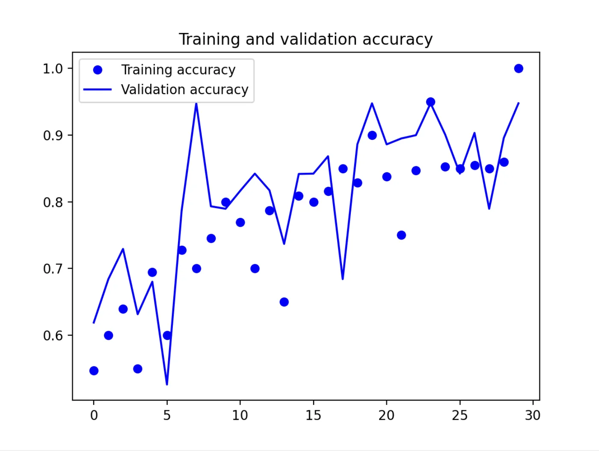
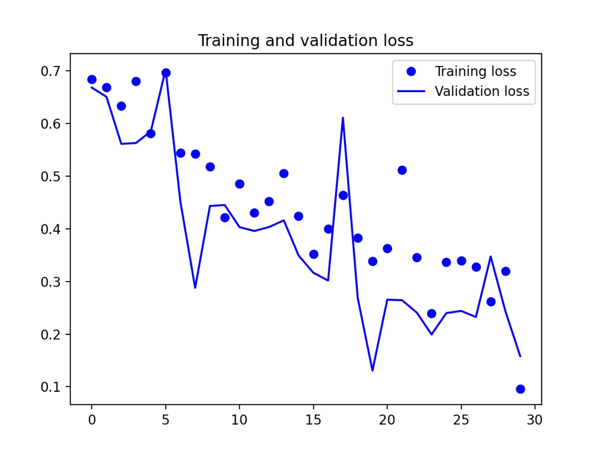
Let’s discuss both plots in detail.
- X-Axis: Epochs (from 0 to 30). Each point on the X-axis represents one epoch — one complete pass through the entire training dataset.
- Y-Axis: Accuracy (ranging from 0.5 to 1.0). This measures how accurately the model classifies the training and validation data.
First, looking at the accuracy plot, you’ll notice training accuracy trends upward, right? Sure, there are a few noticeable outliers (blue points sitting noticeably far from the general curve), but overall, we can conclude that — despite our fairly simple setup and only 30 training epochs — accuracy keeps climbing, ending up close to 0.9. In short: that’s good.
The picture for validation accuracy is messier. The fluctuations are more pronounced, but broadly speaking, we can still say validation accuracy trends upward too — just less consistently.
Together, these two observations — relatively good training accuracy alongside noisier, weaker validation accuracy — suggest the model is overfitting to the training data. In other words, it does reasonably well on training data (even the noisy parts), but performs worse when applied to validation data it hasn’t seen in quite the same way. A well-trained model shouldn’t show this pattern, and ideally we’d take additional steps to fix it — adding more training images, adjusting the number of layers in our network, and/or tuning their parameters. In practice, that means changing the layer count and numeric parameters here:
model = Sequential([
Conv2D(32, (3, 3), activation='relu', input_shape=(150, 150, 3), kernel_regularizer=l2(0.001)),
MaxPooling2D(2, 2),
Conv2D(64, (3, 3), activation='relu', kernel_regularizer=l2(0.001)),
MaxPooling2D(2, 2),
Conv2D(128, (3, 3), activation='relu', kernel_regularizer=l2(0.001)),
MaxPooling2D(2, 2),
Conv2D(128, (3, 3), activation='relu', kernel_regularizer=l2(0.001)),
MaxPooling2D(2, 2),
Flatten(),
Dense(512, activation='relu', kernel_regularizer=l2(0.001)),
Dropout(0.5),
Dense(1, activation='sigmoid')
])Checking how well we did
Of course, once we’ve trained our model and have the results of that process, we naturally want to try it out. We can do that with a separate script, which handles a few things:
- accepting a file to classify as cat or dog
- loading our trained model
- actually running the classification
Let me emphasize once more: training only needs to happen once (assuming you’re not experimenting with different epoch counts or other parameters), and every subsequent time we run our classifier, we’ll reuse the already-trained model that gets saved to a file by this code:
model.save('cats_vs_dogs.h5')To give you a sense of what we mean by “trained model,” let me show you how it actually looks. If you check the size of our dataset (which you downloaded from Microsoft’s site at the start of this journey), you’ll find it comes out to around 1,673,718,106 bytes (1.77 GB on disk) — in my case, at least.
So the file of our trained model has the following size:
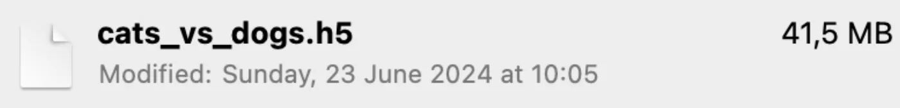
You’ll immediately notice that the dataset’s size (raw image files) and the trained model’s size are wildly different. One reason for that is the convolutional approach we used, which compresses our data significantly — along with the fact that we’ve averaged out and discarded a lot of information from the original files that isn’t needed for classification.
This file is binary, for maximum efficiency, but you’re free to open it and poke around if you like — though, frankly, you won’t find anything useful in there:
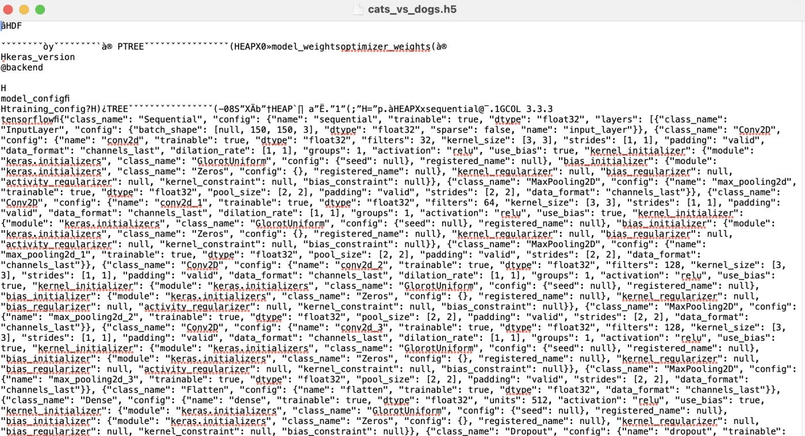
So our prediction.py looks like this:
from tensorflow.keras.models import load_model
from tensorflow.keras.preprocessing import image
import numpy as np
# Load the trained model
model = load_model('cats_vs_dogs.h5')
def predict_image(img_path):
# Load and preprocess the image
img = image.load_img(img_path, target_size=(150, 150))
img_tensor = image.img_to_array(img) # Convert image to array
img_tensor = np.expand_dims(img_tensor, axis=0) # Add batch dimension
img_tensor /= 255.0 # Normalize the image
# Make a prediction
prediction = model.predict(img_tensor)
# Interpret the result
if prediction[0] > 0.5:
print("This is a dog.")
else:
print("This is a cat.")
# Example usage
predict_image('KITTEN-WITH-A-MOUSE-150x150.jpg')Since you’ve made it this far, I’m confident you have at least a bit of development experience, so I won’t walk through what’s happening in this code.
Let me just walk through the verification steps I used to check how well our model actually learned.
First, I’ll grab an image from the training data folder and pass its filename to predict_image(). Using an image from the /cat folder, the simple output “This is a cat” tells me our weights and biases are apparently working relatively well in this case.
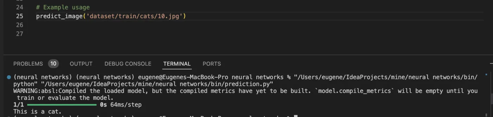
Let’s go further and try to identify a dog image — and it should say “dog,” of course. Here’s the result on my end:
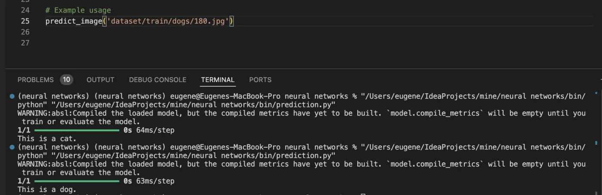
As you can see, the model got it right again — the file really does show a dog. So it seems like… no, let’s do a real test with an actual image from the Internet. I’ll walk through the whole process.
Here’s a Google Images search I ran, and I’m asking our model to identify what’s in the first image, with no edits made to the downloaded picture.
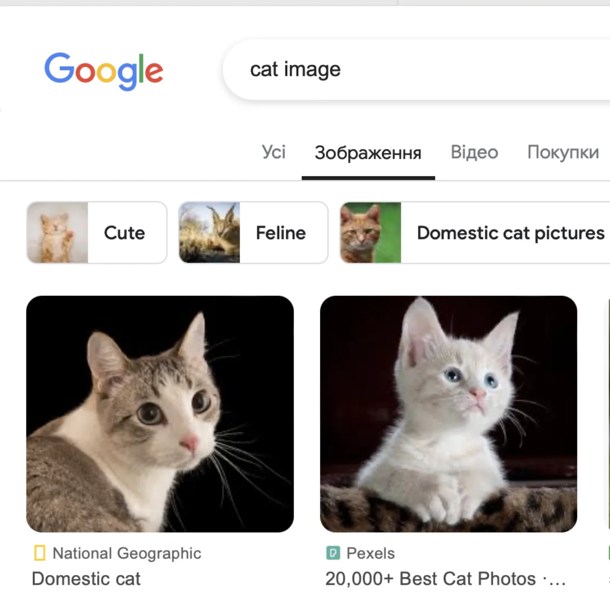
As you can see the model is right again!
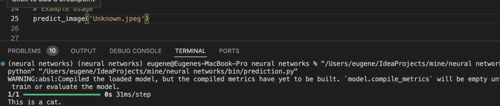
Let’s try something new: a busier background, some visual noise. I’ll use a cat image from Google Search again, the one outlined with a red box below.
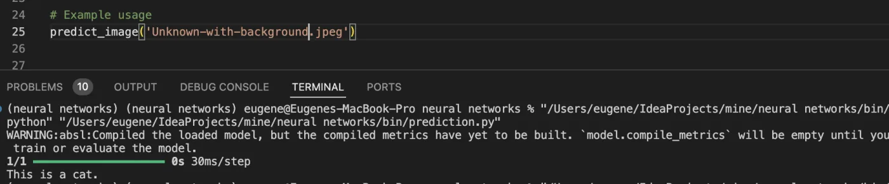
Interesting — it still works! Now let’s try something really strange:
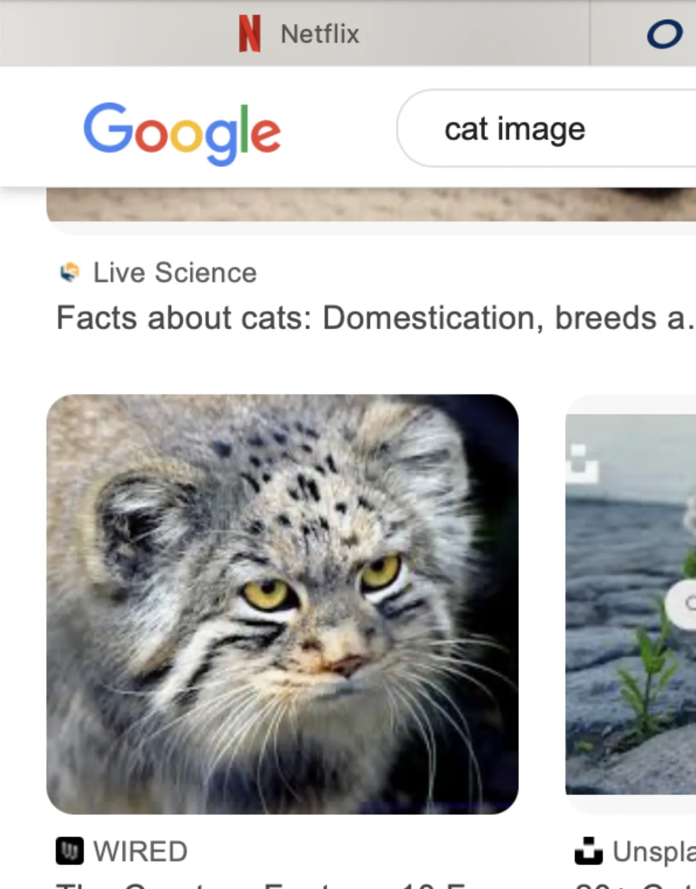
So even this odd combination of pixels — despite what our earlier plots might have led us to doubt — still gets correctly identified as a cat by our model.
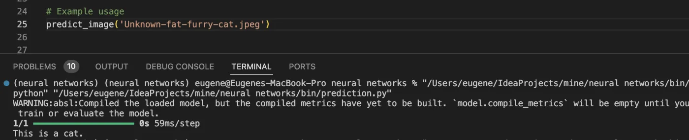
Good time to check the same thing for dogs, then?
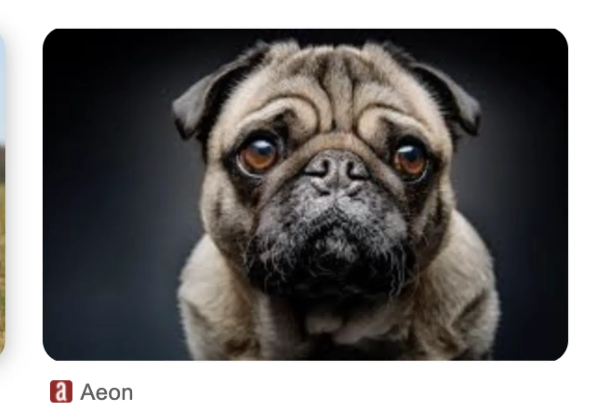
So… it might sound strange, but it still works!
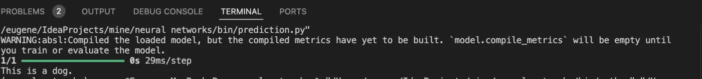
OK, I hope it’s now pretty clear how you can test your trained model to build the simplest, but genuinely working, image classifier.
Conclusion
Thank you for reading this far — it means this journey was as interesting for you as it was for me. Personally, when I was deciding whether to pay attention to a hyped-up topic like machine learning, it felt like some kind of magic. In reality, though, I came to realize that roughly 80% of what’s called “machine learning” is stuff covered in almost any discrete math course, and only a relatively small part is genuinely rooted in probabilistic methods that are rarely taught outside math-focused university programs.
So, here’s a short recap of the key takeaways worth remembering:
- We need a dataset if we want to “teach” our model anything.
- That dataset should be split into two parts — training and validation.
- A neural network is a layered structure that processes an image’s pixels in some structured way.
- Learning is an iterative process, because the sets of coefficients — the weights and biases — need to be adjusted repeatedly to meet our model’s expectations.
- The core idea of learning is generalizing images into an abstract structure that captures the combinations of pixels needed to identify the objects we’re trying to classify.
- How all of this was originally discovered is an entirely different story.